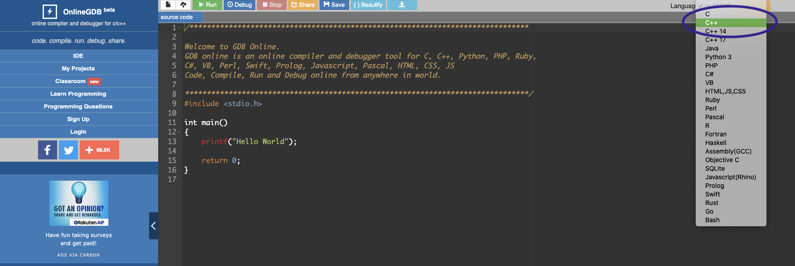
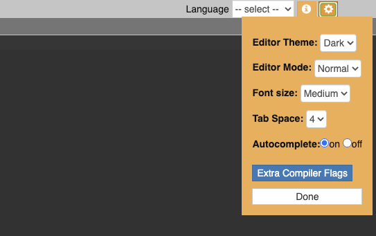
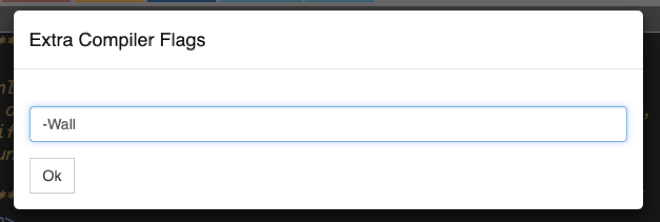

difficulty: easy
an online IDE that requires no installation at all.
steps to use
1. navigate to the following link:
2. click the selection box beside languages in the top right corner, and select c++ as shown below::
3. IMPORTANT! before beginning to code, you MUST set an extra warning flag to make sure all warnings are caught!!! click the little settings gear to the right of where you selected c++:
4. click extra compiler flags. type in -Wall in the little pop up box, and click ok
5. and that is it! now you are all set to use onlinegdb. you can create an account to save files online, or just download them and re-upload them every time you get to coding.
extras: why step 3?
for those of you curious, the extra -Wall compiler flag catches issues such as a non-void function that doesn’t have a return value, and prints the warning to the console. if you did not have this flag, that error could possibly go unnoticed and ultimately break your program!! not good ):